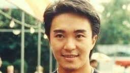

周星驰
英文名：Stephen Chow Sing
Chi，昵称星爷、星仔，籍贯浙江宁波，出生及成长于香港。著名演员、导演、监制、编剧，同时为广东省政协委员
个人荣誉
-
1992年美国《人物》杂志评周星驰为“全球最有趣男明星”。至今唯一一位华人获此殊荣韩国汉城亚太国际电影节以威龙闯天关获得“亚太影帝”
- 1996年威尼斯国际电影节将《食神》列入“观摩电影”
-
1999年威尼斯国际电影节举办以他的名字命名的“周星驰周”，将他的旧作在影展期间逐日重温。至今唯一一位华人获此殊荣
-
2002年世界最具影响力的体育报纸和欧洲杯的创办者《队报》头版以“亚洲足球还没有结束！”为标题，大篇幅介绍了周星驰和他的新作《少林足球》。《队报》空前的高度评价使得周星驰在欧洲名声大噪，仿佛成了一位足球巨星。远在地球另一头的中国足协破天荒的邀请周星驰出任“中国女足全球形象大使”。至今唯一一位登上《队报》的华人非体育明星《少林足球》被“日本奥斯卡”评为“最佳外语片”，领奖人：导演周星驰
-
2004年加拿大多伦多国际电影节将《功夫》选为“2004年度开幕电影”，首部华人执导的电影成为开幕电影。
-
2005年周星驰凭《功夫》获荷兰阿姆斯特丹国际奇幻电影节最高奖项"SilverScreamAward"，至今唯一一位华人导演在国际型奇幻电影节上获奖波士顿电影评论学会大奖“最佳外语片”：《功夫》（周星驰）芝加哥电影评论学会大奖“最佳外语片”：《功夫》（周星驰）
-
2011年《时代周刊》美国版评出“世界电影史上25部最佳体育电影”，《少林足球》是上榜的两部足球电影之一，周星驰是唯一榜上有名的亚洲导演
个人作品
| 电影 |
电视剧 |
| 《赌圣》 |
《盖世豪侠》 |
| 《逃学威龙》 |
《他来自江湖》 |
| 《审死官》 |
《孖仔孖心肝》 |
| 《唐伯虎点秋香》 |
|
| 《破坏之王》 |
|
| 《喜剧之王》 |
|
生活照

生平
-
周星驰，其名出自于滕王阁序中的“雄州雾列，俊采星驰”。小时家穷，有一姊一妹（同母异父的姐姐是在中国大陆出生），7岁时父母离异，他和姊妹由母亲凌宝儿独力养大。他于1974年毕业于中华基督教会协和小学下午校。读中二时与李健仁同班，中五毕业于圣玛利奥英文中学。在学期间迷恋李小龙的电影，他立志成为一帮之主。
-
1980年，时年18岁的周星驰在丽的电视（亚洲电视前身）当特约演员而入行，首次于青春电视剧《I.Q.成熟时》演出，同时兼职办公室助理。
-
1981年经戚美珍介绍进入无线电视艺员训练班第11期的夜训班。在训练班的最后3个月开始在无线电视的电视连续剧当临时演员。1983年，毕业后不久，他被安排到儿童节目《430穿梭機》担任主持人4年，在其中的儿童单元剧《黑白僵尸》系列中扮演主角“黑僵尸”有突出的表演，很受当时的儿童观众欢迎。周星驰于工作之余学习演技。周星驰的演艺生涯转捩点，是1988年演出李修贤监制的电影《霹雳先锋》，他凭该片夺第25届台湾金马奖最佳男配角。自此电视台对他刮目相看。
-
1989年，周星驰担任《盖世豪侠》的主角，是他首次在剧集（不计单元剧）中担演第一男主角。他于剧中初露个人风格，其剧中口头禅：“坐低，饮啖茶，食个包。”（“坐下、喝口茶、吃个包子。”）“你讲嘢呀”（“你在说话吗？”）等成为了当时香港人的口头禅。周星驰由此走红，并在同年5月接下了其作为明星的第1个商业广告代言“眼镜88”（广告词：“不如我们坐低，饮啖茶，食个包，食个包……”）。
-
1990年，周星驰担当低成本电影《赌圣》的主角，票房高达41,326,156港元，首破香港影史纪录，周星驰凭着这部电影奠定了巨星的地位。
-
1991年，周星驰担当主角的《逃学威龙》，票房高达43,829,449港元，第二次大破香港影史纪录。这时他的票房号召力与成龙、周润发并驾齐驱，三人更被喻为“双周一成”，周星驰开始被媒体公开称为“星爷”。
-
1992年，周星驰主演7部电影，其中5部囊括香港票房排行榜前五名，更凭大破香港影史纪录的《审死官》获得亚太影展影帝大奖。于是，1992年被媒体称为“周星驰年”。
-
1996年，周星驰作为导演和出品人的《食神》上映后，不但票房丰收，而且引起了好莱坞片商对他导演才华的注意。二十世纪福克斯向周星驰买下《食神》版权，欲邀其重拍美国版《食神》，但最终被周星驰拒绝。
-
2001年，周星驰首次独立执导的《少林足球》，香港票房高达60,739,847港元，打破香港华语片票房纪录。该片在意大利、法国、德国等地也大受欢迎，开创演艺生涯又一高峰。此片也是他首部在欧洲大规模上映的电影。《少林足球》令周星驰成为香港电影金像奖历届以来，唯一凭同一部电影兼夺最佳导演及最佳男主角宝座的得奖者。
-
2004年推出《功夫》，香港票房收入61,278,697港元，打破《少林足球》所创下的香港华语片票房纪录。该片亦创下印度、泰国、印尼、马来西亚、新加坡、菲律宾、台湾、香港、卡达、约旦、阿曼、科威特、巴林、安哥拉、白俄罗斯、斯洛维尼亚、罗马尼亚、西班牙、葡萄牙、匈牙利、挪威、爱沙尼亚、墨西哥、玻利维亚、委内瑞拉、哥伦比亚、巴拿马、哥斯达黎加、多米尼加、牙买加、库拉索、乌拉圭等数十个国家和地区的华语电影票房纪录。周星驰以该片获得第42届金马奖最佳导演、最佳剧情片，并且入围第63届金球奖最佳外语片、英国电影学院奖最佳外语片和获得美国广播电影协会奖最佳外语片。
-
2008年周星驰再次身兼监制、导演、编剧、以及主演的《长江7号》，香港票房51,402,777港元，位列香港华语片票房第7名，也是他自己的影片中票房第3高（仅次于《功夫》和《少林足球》）；《长江7号》不但在中国大陆的票房达2.03亿人民币，而且打破了马来西亚影史票房记录。
-
2010年，周星驰入主香港上市公司比高集团并担任执行董事，2013年起任第十一届广东省政协委员，但在他的任期内没有提出过任何提案，有被撤职的可能。他执导的《西游·降魔篇》创华语片新记录，成为全球最卖座的华语电影。（从《功夫》开始，周星驰导演电影的中国大陆票房全部都上亿元人民币。）
-
2016年3月，周星驰监制、编剧及导演的电影《美人鱼》以全球5.55亿美元票房成为世界史上最高票房的非好莱坞电影。周星驰也从《美人鱼》全球票房和收入等获益超过1亿美元。
-
由于周星驰的电影大受全球华人欢迎，所以香港、台湾及中国大陆的电视台经常重播其电影。